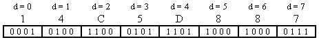
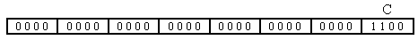
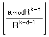
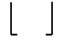
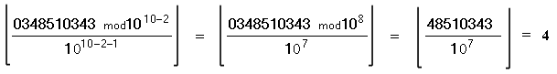
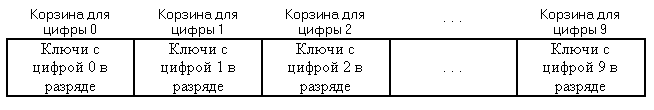
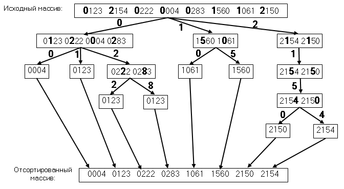
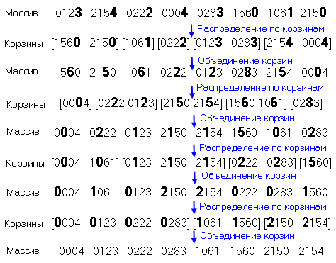

|
|
|
Многие приложения используют для поиска ключевые значения данных с сложной структурой, состоящие из отдельных частей (телефонный номер, почтовый индекс, IP - адрес в сети Интернет). Если выполняется сортировка данных по возрастанию или убыванию ключей, то упорядочивание ведется не по числовому значению ключа, а по отдельным его цифрам. Отдельная цифра ключа называется разрядом и сортировка, использующая отдельные цифры, называется поразрядной. Алгоритм поразрядной сортировки рассматривает ключ любой природы как натуральное число, представленное в системе счисления с основанием R. Для различных приложений основание R может быть различным В компьютере ключи могут рассматриваться, как числа в системе счисления с основанием R = 2 или в системе счисления с основанием, равным степени двойки 2n. Если ключи являются строками текста, то их можно рассматривать, как числа в системе счисления с основанием 128 или 256, когда отдельный символ текста является отдельной цифрой в этой системе счисления. Существуют два подхода к поразрядной сортировке. При первом подходе алгоритм поразрядной сортировки анализирует значения цифр, начиная слева, с наиболее значащих цифр. Данный алгоритм известен, как MSD - сортировка (Most Significant Digit radix sort). Другой способ поразрядной сортировки анализирует цифры ключей справа налево, начиная с наименее значащих цифр, и называется LSD - сортировкой (Least Significant Digit radix sort) [4]. Извлечение цифры из ключаПоскольку поразрядная сортировка базируется на анализе отдельных цифр ключа, то операция выборки цифры играет ключевую роль в процессе сортировки. Если ключ - строка символов, то обычно основание системы счисления R равно 128 или 256, в соответствии с размером таблицы кодировка символов ASCII. В этом случае отдельная цифра совпадает с отдельным символом строки (ASCII - кодом символа) и выбор цифры сводится к выбору символа из строки по индексу. Если ключи - числа, то может использоваться представление ключа, как числа в системе счисления с любым основанием R. Учитывая двоичное представление чисел в компьютере, удобно в качестве R использовать степень двойки (2, 4, 8, 16, . . . ). В этом случае выборку цифры по ее номеру - d можно выполнить с помощью поразрядных операций сдвига и маcкирования. Необходимо отметить. что алгоритм выборки цифр ведет нумерацию цифр в числе слева направо в пределах машинного слова, содержащего число. Номер позиции со старшей цифрой в машинном слове имеет номер d =0 Общее количество возможных цифр в числе зависит от разрядности машинного слова - bitsword и количества битов, необходимых для хранения цифры - bitsdigit. Пусть ключ a хранится в 32 - разрядном машинном слове (bitsword = 16) и R = 16. Для хранения отдельной цифры требуется 4 бита (bitsdigit = 4). Общее количество цифр в машинном слове K = bitsdigit / bitsdigit = 32 / 4 = 8. Номера цифр меняются с 0 до 7, начиная со старшей. Значение 34851034310 = 14C5D88716 разместится в машинном слове следующим образом:  Чтобы выбрать цифру с номером d = 2 ( C ), нужно сдвинуть машинное слово на 20 разрядов вправо , чтобы расположить в младших разрядах нужную цифру, и отбросить старшие цифры в сдвинутом числе (1 и 4), выделив в сдвинутом числе только младшую цифру:  Например, на языке Си это преобразование можно реализовать следующим образом: a>>(bitsword - (d+1)*bitsdigit)&(R-1) Если основание R не является степенью двойки, то цифру можно вычислить по формуле:
 , где a - число, R - основание системы счисления, k - количество цифр в машинном слове с числом a, d - номер цифры, которую нужно вычислить, mod - операция получения остатка от целочисленного деления,
 Например, если R = 10, то в 32 - разрядном машинном слове умещается число с десятью значащими цифрами, то есть k = 10. Необходимо извлечь из числа a = 034851034310 цифру с номером k = 2, то есть 4. Применим формулу:

MSD - сортировкаХод поразрядной MSD - сортировки аналогичен быстрой сортировке с делением массива на части и дальнейшим делением полученных частей. Но принцип деления в MSD - сортировке иной. Сначала исходный массив делится на R частей, где R - основание, выбранное для представления ключей, как чисел. Если ключи рассматриваются алгоритмом, как десятичные числа, то массив делится на десять частей . Эти части принято называть "корзинами" или "карманами". Поэтому поразрядная сортировка известна также как "карманная" сортировка. В первую корзину попадают ключи, у которых старшая цифра с номером d =0 имеет значение 0. Во вторую корзину попадают ключи, у которых старшая цифра с номером d =0 имеет значение 1 и так далее. В десятую корзину попадают ключи, у которых старшая цифра с номером d =0 имеет значение 9.  Затем ключи, попавшие в разные корзины, подвергаются рекурсивному разделению по следующей цифре с номером d =1. Разделение выполняется только для корзин, в которых более одного ключа. Необходимо отметить, что для повышения эффективности MSD - сортировки и уменьшения глубины рекурсии, корзины с небольшим количеством ключей сортируются с помощью вспомогательного простого не рекурсивного метода сортировки (например, сортировки включениями). Рекурсивный процесс разделения продолжается, пока не будет выполнено разделение корзин по последней цифре с номером d = 9. Диаграмма MSD - сортировки выглядит следующим образом:  В основу распределения ключей по корзинам положен метод распределяющего подсчета ключей с одинаковыми значениями в сортируемом разряде. Для этого выполняется просмотр массива и подсчет количеств ключей с различными цифрами в сортируемом разряде. Эти счетчики фиксируются во вспомогательном массиве счетчиков. Затем эти счетчики используются для вычисления размеров корзин и определения границ разделения массива. В соответствии с этими границами ключи переносятся во вспомогательный массив, в котором размещены корзины. После того как корзины сформированы, содержимое вспомогательного массива переносится обратно в исходный массив и выполняется рекурсивное разделение новых частей по следующей цифре в пределах границ корзин, полученных на предыдущем шаге.
Псевдокод алгоритм а MSD - сортировки: 1.
2.
3.
4.
5.
6.
7.
8.
k
←
bitsword / bitsdigit
9.
10. if d > k 11. then return 12. if r – l ≤ M 13. then Insertion_Sort (A+l , r - l ) 14. return 15.
16. for j ← 1 to R + 1 17. do count[j] ← 0 18 for i ← l to r 19.
do
j ← digit(A
[i], d,, R )
20 count[j+1] ← count[j+1] + 1 21. for j ← 2 to R 22. do count[j] ← count[j] + count[j -1] 23. 24. for j ← l to r 25. do j ← digit(A [i], d,, R ) 26. C [l + count[j]] ← A [i] 27. count[j] ← count[j] + 1 28. 29. for i ← l to r 30. do A [i] ← C [i] 31.MSD_Sort (A, l , l + count[1] - 1, d +1, C ) 32. for i ← 2 to R 33. do MSD_Sort (A , l + count[i], l + count[i+1] -1, d + 1, C )
Трудоёмкость MSD-сортировки оценивается величиной O(n logRn). При R=2 трудоёмкость сопоставима с трудоёмкостью быстрой сортировки или сортировки слиянием и равна O(n log2n). При больших R величина logRn становится малой и трудоёмкость становится линейной функцией O(n). LSD - сортировкаАлгоритм LSD - сортировки выполняет разделение ключей по корзинам аналогично методу MSD - сортировки. Но выбирает цифры из ключей в направлении справа - налево, от младших цифры с номером d = R-1 к старшей цифре с номером d = 0. В отличие от MSD - сортировки алгоритм LSD - сортировки не рекурсивный. При сортировке по более старшим цифрам порядок ключей, полученный на предыдущих шагах, не поддерживается. После очередного шага все сформированные корзины вновь объединяются в пределах всего сортируемого массива в одну группу и на следующем шаге выполняется разделение по следующей цифре всего массива. Тем не менее, после сортировки по последней, старшей цифре (d = 0) массив упорядочен по ключам. Диаграмма LSD - сортировки выглядит следующим образом: 
Псевдокод алгоритма LSD - сортировки: 1.
2.
3.
4.
5.
6.
k
← bitsword
/ bitsdigit
7.
8. for d ← k down 0 9. do 10.
11. for j 1 to R + 1 12. do count [j] ← 0 13. for i ← 1 to n 14.
do
j ← digit
(A
[i], d , R )
15. count[j+1] ← count[j+1] + 1 16. for j ← 2 to R 17. do count[j] ← count[j] + count[j-1] 18.
19. for j ← 1 to n 20. do j ← digit(A [i], d , R ) 21. C [count[j]] ← A [i] 22. count[j] ← count[j] + 1 23.
24. for i ← 1 to n 25. do A [i] ← C [i] 26 return
Трудоёмкость
LSD-сортировки имеет нотацию O(n |
|
|